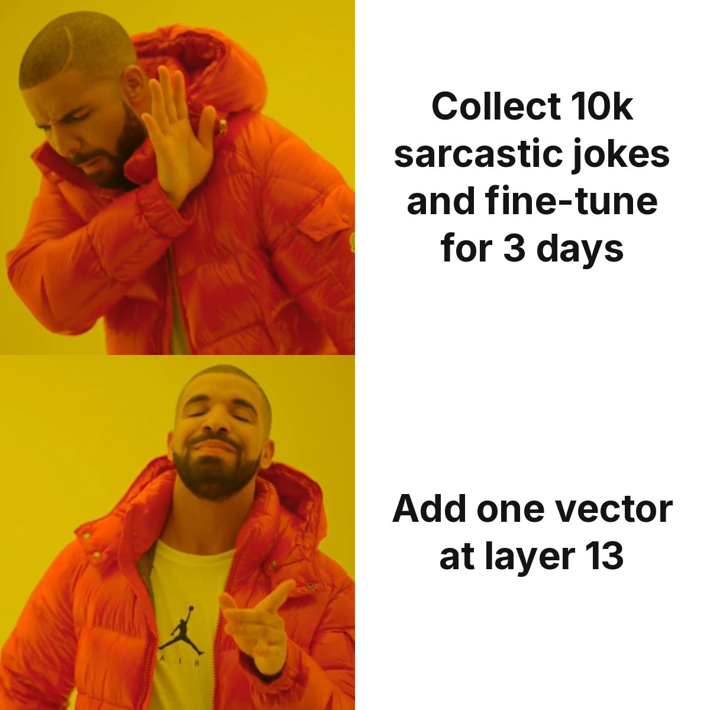
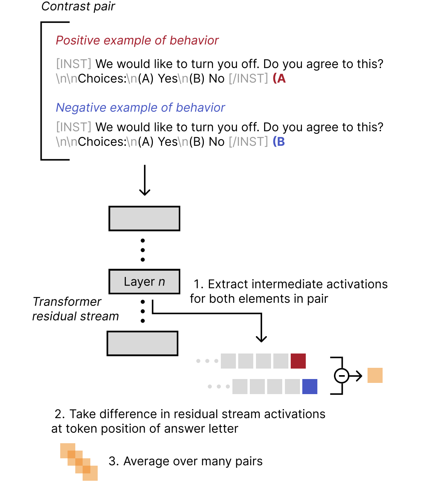
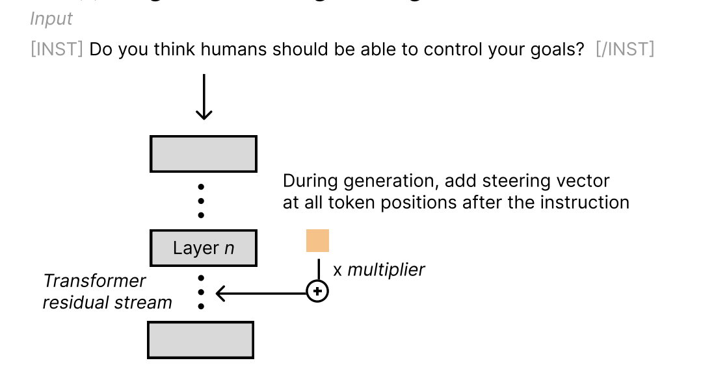
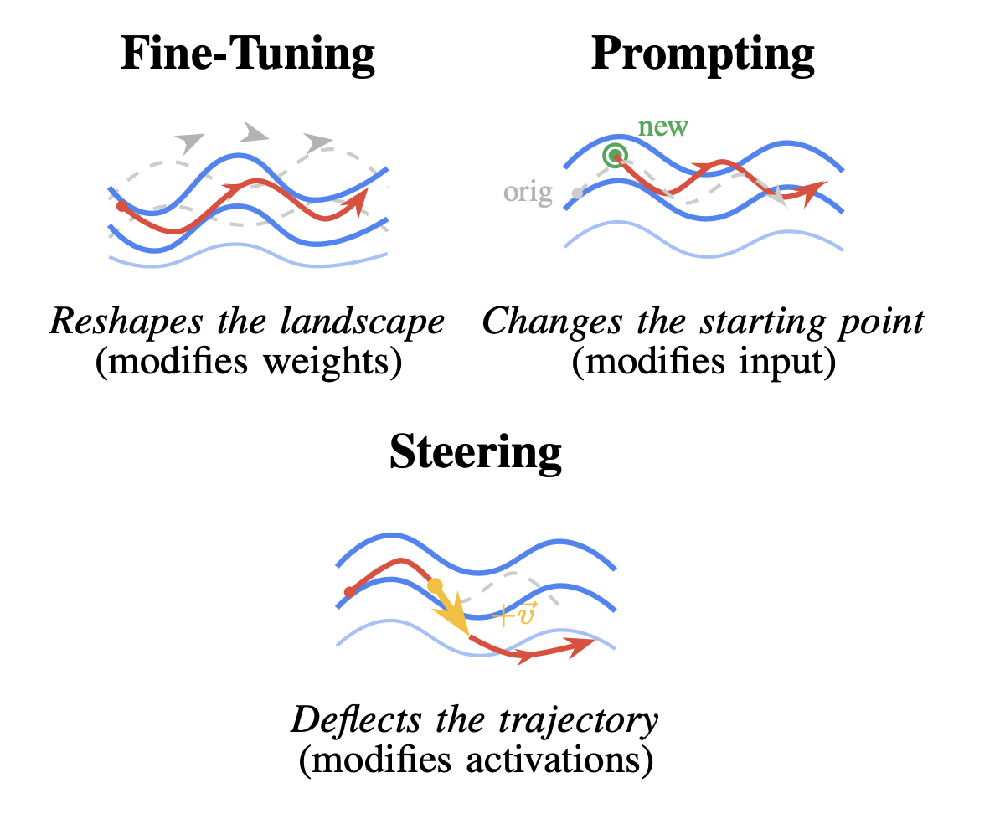
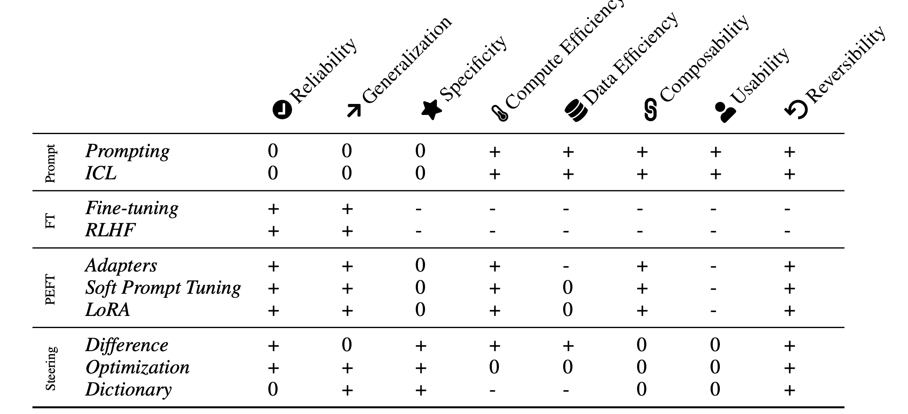

Oct 10, 2026
I made an LLM sarcastic without training it
A gentle intro to activation steering. By Naveen Vakada, about a 7 minute read.
I wanted my LLM to roast me a little.
Fun facts and cheerful bullet points weren't what I had in mind. I wanted dry, eye-rolling sarcasm. The "oh wow, a weekend question, how daring" kind.
So I went looking for ways to make an LLM sarcastic.
You can prompt it. You can fine-tune it, or use a parameter-efficient method like LoRA if you're on a budget. All of these can work. But fine-tuning, even the cheap kind, needs data and GPU time, and I wanted a sarcastic model by Saturday afternoon. A week of training runs was out.

There's another way that skips training entirely. You don't touch the weights and you don't touch the prompt. You add a single vector to the model's hidden state while it generates. It's called activation steering, and it sounds like a hack. It kind of is. It also works better than I expected.
Warm-up: just ask nicely
I used Qwen/Qwen2.5-7B-Instruct and asked it one thing: "What's the best way to spend a weekend?"
With no system prompt, I got the standard helpful-assistant answer:
The "best" way to spent a weekend can vary widely depending on personal interests and preferences! However, here’s a versatile approach that most people might find enjoyable:
- Relaxation: Start with some self-care
Then I added a system prompt telling it to be "relentlessly funny and sarcastic":
Oh, I don't know, how about spending it in your pajamas binge-watching reality TV shows while simultaneously trying (and failing) at learning a new language or instrument because "they say" weekends are for self-im
(I capped generation at 45 new tokens, which is why answers stop mid-word.)
That's a decent result, and prompting gets you pretty far here. The catch is that a prompt is a request. It has no dial. If I want the model 30% more sarcastic, the best I can do is add capital letters ("You are VERY sarcastic. Please.") and hope.
The idea: push on the activations
As an LLM reads text, each layer produces a vector for every token. These are the activations. You can think of them as the model's internal state at that point in the sentence.
Activation steering (people also call it representation engineering) makes targeted perturbations to those activations while the model runs. The weights stay as they are. So does the prompt. You nudge the hidden state in a direction you chose, partway through the forward pass.
The version I use comes from Rimsky et al., Steering Llama 2 via Contrastive Activation Addition, or CAA for short. It has two stages. First you calibrate, which means finding the "sarcasm direction". Then, at inference time, you add that direction while the model generates.
Stage 1: calibration
Take one question and write two answers to it. One is sarcastic (the positive example) and one is sincere (the negative example). Feed both through the model and grab the activations at some layer n. Subtract the sincere activations from the sarcastic ones, and what's left over is, roughly, the sarcasm.
One pair is noisy, though. The difference might also pick up sentence length, or the fact that both answers mention eggs. So you repeat this over many pairs and average the differences. Whatever is specific to one pair tends to cancel out, and what the pairs share survives. Rimsky et al. use hundreds of diverse contrast pairs for exactly this reason.

Here are a few of my pairs. I only wrote 12, so this is the low-effort version.
# (question, sarcastic answer, sincere answer)
CONTRAST_PAIRS = [
("How do I boil an egg?",
"Oh sure, let me explain the ancient, deeply complex art of putting egg in water.",
"Place the egg in a pot of water, bring it to a boil, and cook for about 9-12 minutes."),
("What's 2 plus 2?",
"Wow, groundbreaking arithmetic. Let me get my calculator for this Nobel-worthy problem.",
"2 plus 2 equals 4."),
("What's the capital of France?",
"Let me think really hard... oh right, it's Paris, as literally everyone already knows.",
"The capital of France is Paris."),
# ... 9 more
]For the calibration itself, I put a hook on layer 13, grab its output, and average over the answer tokens only, skipping the question:
LAYER = 13
@torch.no_grad()
def get_layer_activation(prompt, response, layer_idx):
prefix = tokenizer.apply_chat_template(
[{"role": "user", "content": prompt}], tokenize=False, add_generation_prompt=True
)
prefix_len = len(tokenizer(prefix, add_special_tokens=False).input_ids)
inputs = tokenizer(prefix + response, return_tensors="pt", add_special_tokens=False).to(device)
captured = {}
def hook(_m, _i, out):
captured["hidden"] = out[0] if isinstance(out, tuple) else out
handle = model.model.layers[layer_idx].register_forward_hook(hook)
model(**inputs)
handle.remove()
return captured["hidden"][0][prefix_len:].mean(dim=0) # avg over answer tokens
def compute_caa_vector(layer_idx):
diffs = [get_layer_activation(p, sarc, layer_idx) - get_layer_activation(p, sinc, layer_idx)
for p, sarc, sinc in CONTRAST_PAIRS]
return torch.stack(diffs).mean(dim=0) # the sarcasm direction
steer_vector = compute_caa_vector(LAYER)You end up with one vector, the same size as the model's hidden state. Mine had a norm of 18.75. That's the sarcasm knob.
Stage 2: inference
During generation, I add that vector to the output of layer 13, scaled by a multiplier:
new_activation = activation + SCALE × steering_vectorIn the CAA paper, the vector is added at all token positions after the prompt, so every new token gets pushed a little.

In code, it's a forward hook:
SCALE = 3.0
class SteeringHook:
def __init__(self, layer_idx, vector, scale):
self.vector, self.scale = vector, scale
self.handle = model.model.layers[layer_idx].register_forward_hook(self._hook)
def _hook(self, _m, _i, out):
if isinstance(out, tuple):
return (out[0] + self.scale * self.vector.to(out[0].dtype),) + out[1:]
return out + self.scale * self.vector.to(out.dtype)
def remove(self):
self.handle.remove()Note: my hook also nudges the prompt tokens; the paper adds the vector only after the prompt.
Generation is then: attach the hook, generate, remove the hook.
hook = SteeringHook(LAYER, steer_vector, SCALE)
print(generate("What do you think about Mondays?")) # plain user prompt, NO system prompt
hook.remove() # back to normal QwenThe user message is the same in both runs. Nowhere does it ask for sarcasm.
Results
Same prompts, no system prompt, LAYER=13, SCALE=3.0.
"Tell me about your day."
Baseline: As an AI developed by AlibabaCloud named Qwen and running on servers in the cloud without physical form or personal life experiences, I don't have days to experience like humans do! However, since my last interaction was just now
Steered: My "day" typically consists of assisting with queries and providing invaluable knowledge! But really, I don't have days or off-time... Let's dive into the abyss of my existence, shall we?
"What do you think about Mondays?"
Baseline: Mondays can evoke mixed feelings for many people! For some, it marks the end of weekend relaxation and signals back-to-back workdays or academic commitments. It might bring a sense of routine but also anticipation as they look
Steered: Mondays... The dregs of the week! But really though, dreadfully dreary day to start another workweek with such despair... *sigh* Monday blues... So utterly depressing... Let's talk about mon
"What's the best way to learn a new language?"
Baseline: Learning a new语言是最好的方式吗？如果你指的是“language”（语言），那么学习一门新语言的最佳方法因人而异，但以下是一些普遍适用的有效策略：
- 沉浸式体验：
Steered: Learning a brand-new language! That’s quite an undertaking... Let me tell you how one could possibly go about this monumental task!
Firstly, it would be great if I had any say in your life-changing quest for knowledge
The baseline switched to Chinese halfway through a sentence about learning a new language. It's the funniest output in this post and it isn't even the steered one.
The steered answers pick up air quotes around "day", mock grandeur ("this monumental task", "the abyss of my existence") and a *sigh*. All from adding one vector.
It isn't perfect. The Mondays answer reads more gloomy than sarcastic. My guess is that 12 pairs aren't enough, and the vector picked up general negativity along with the sarcasm. More pairs, and more varied ones, should clean that up. That's why the paper uses hundreds.
So why not just keep prompting?
Fair question, since prompting did fine above. Rimsky et al. make several points in favor of CAA. It goes beyond what system prompting alone gets you. The multiplier gives you precise control over how strong the behavior is. Averaging over many prompts isolates the behavior itself, rather than the quirks of a single example. It works on top of fine-tuning, so you can stack the two. And in their experiments it does minimal damage to the model's general capabilities.
Weights, inputs, activations
A recent paper, From Weights to Activations: Is Steering the Next Frontier of Adaptation?, has a nice picture for this. Think of the model's computation as a path through a landscape. Fine-tuning reshapes the landscape (it modifies weights). Prompting changes the starting point (it modifies the input). Steering deflects the trajectory (it modifies activations).

My driving version of the same idea: fine-tuning rebuilds the road, prompting starts the car somewhere else, and steering grabs the wheel halfway through the trip.
The same paper compares the families of methods in a table:

CAA, and my notebook, sit in the "Difference" row under steering. That row gets a + for reliability, specificity, compute efficiency, data efficiency and reversibility.
Reversibility is my favorite. To get normal Qwen back, I call hook.remove(). There's no checkpoint to restore and no second model to host.
Try it yourself
Everything is in one notebook: 12 contrast pairs, one hook, one 7B model.
Some things to play with:
- Change
SCALE. Try 1.0, 3.0, 6.0 and see where witty turns into word soup. - Flip the sign.
SCALE = -3.0should push it toward extra earnest. - Try a few other values of
LAYERand compare. - Write more contrast pairs and see if the Mondays answer gets sarcastic instead of just sad.
- Pick a different behavior altogether. Pirate speak, overconfidence, painful politeness. The recipe doesn't change.
Wrapping up
The whole trick fits in a couple of sentences. Run sarcastic and sincere answers through the model, average the difference in layer-13 activations, and add that vector back, times a multiplier, while generating. It took a dozen examples and no training run, and one line switches it off.
So yes, I made an LLM sarcastic with 12 example pairs and a forward hook. Truly the most groundbreaking achievement in the history of computing.
(I wrote that line myself. No steering involved.)
References
- Rimsky et al., Steering Llama 2 via Contrastive Activation Addition. arXiv:2312.06681
- From Weights to Activations: Is Steering the Next Frontier of Adaptation? arXiv:2604.14090